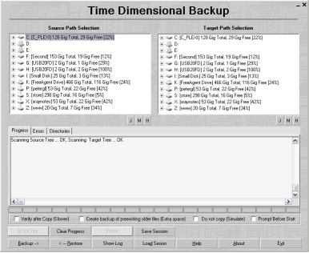
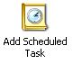
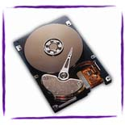
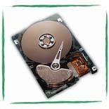

Welcome
to the Time Dimensional
Copy Machine.
This
application was born out
of our need for an easy to use visual backup program for Windows. In
its simplest form, the TimeDim Copy Machine can
copy any source directory to any target
directory. It does incremental copy, only copying files
that are
newer (modified later) than the target. TimeDim will copy as many
files as it
can in one session. It will continue even after it encounters errors,
and generate a
report, showing the name of files that cannot be copied,
and the reason the files cannot be copied. Perfect for unattended
backups, producing zero failure rate
duplicates. Our enterprise has been using this tool for more then three
years.
|
|

|
TimeDim
Theory of
operation:
TimeDim operates on directories. It evaluates every file from a
selected directory, and all its subdirectories thereof, and
will update the target directory accordingly. TimeDim reads the
modification date of the source file and the target file, and it will
copy the source file to the target if the source is newer than the
target. TimeDim will assume that a non existing file is older than the
source, so it will copy files that are missing from the target.
TimeDim Backups:
| The
TimeDim Copy Machine can also be used to
automate backups.
It will accept command line parameters to be used in a Windows
Scheduler
session. This frees the user to execute mundane tasks by hand, and
assures that backups actually happen, and happen at the correct time. |

|
|
TimeDim will operate
successfully as a drive to drive copy machine. A typical example would
be copying ALL
DATA from a 300 Gig drive onto a brand new 500 Gig USB drive. TimeDim
was the only tool that succeeded in copying that amount of data. Most
programs bailed out because of a single file had a
failure condition. (ex: access denied or could not read) With that much
data, ALL other programs we tried have failed or stopped in the middle
of the backup.
|

Source Drive
|
|

Target Drive
|
TimeDim will not make the target drive bootable, as it only copies
DATA. On the screen shot above, is a typical scenario for
TimeDim.
One can
copy whole drive onto a different drive. TimeDim will copy every DATA
file that is on the source drive onto the target drive, including
accessible system files, hidden files. TimeDim cannot copy locked or
inaccessible files, but it will generate a report detailing the files
it cannot copy, and the reason it cannot copy it. Thus TimeDim cannot
be used to make a bootable copy of the drive.
[ Jump to Online Manual ] [ Jump to Download Page
]
|
 The
TimeDim Copy Machine
The
TimeDim Copy Machine